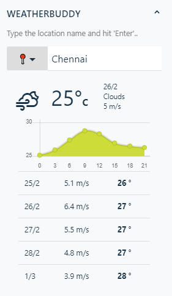
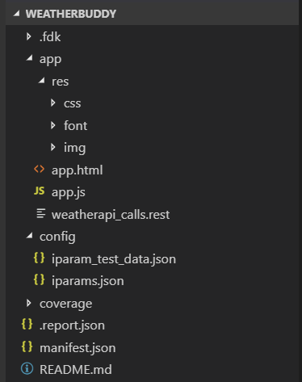
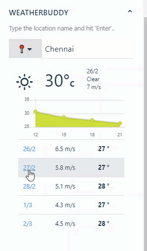
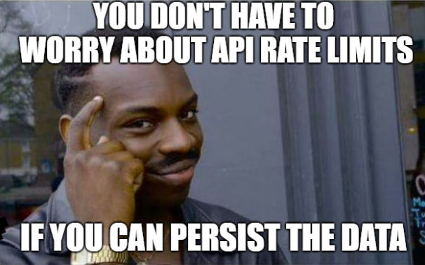
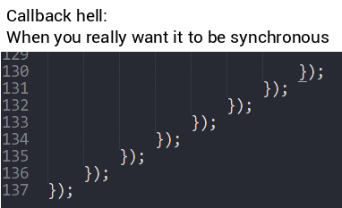
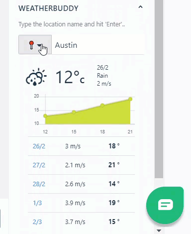

Apart from the cool features that Freshdesk inherently offers, it's marketplace adds additional value to the business through the apps. Freshdesk's app development platform enables us to create apps in no time powered by a wide range of platform APIs & also offers scaffolding via the CLI. Freshdesk's ‘Mint' UI(hence the pun on the title) gives a crisp look and feel to our app out-of-the-box without breaking a sweat! However, as a developer I've always believed in this :
"Code a̶c̶t̶i̶o̶n̶ speaks louder than words"
I went ahead to validate this using my ‘Weather Buddy'. As you may wonder who that person is, it's more of a neat sidebar extension than an actual person. Here's a quick sneak peak !

The app displays weather data for a given location and forecasts the same using theOpenWeatherMap API. It shows the temperature, windspeed, trend for the day and also stores the previously searched locations so that you can easily access them at a later point in time.
I've uploaded the code to myGithub repo for reference. You can clone and run the same to see the magic immediately. Regardless, a short journey through our code will let us understand it better and create cool apps in the future.
Prerequisites: Passion and Curiosity....sprinkled with some JS,HTML & CSS....
Before we dive head-first, we need to take care of the pre-reqs and dependencies. Make sure you have Node.js already installed along with the required tools as stated in the officialquick start guide.
Once you are done, register on OpenWeatherMap and obtain an API key. It's used for fetching weather forecast data. This entry is also stored in iparam_test_data.json. Create a sample app using ‘fdk create' (with the ‘your_first_app' template). We will be building on top of this.
<head> <!-- Scripts --> <script src="https://ajax.googleapis.com/ajax/libs/jquery/3.2.0/jquery.min.js"></script> <script src="//maxcdn.bootstrapcdn.com/bootstrap/3.3.0/js/bootstrap.min.js"></script> <script src="https://static.freshdev.io/fdk/2.0/assets/fresh_client.js"></script> <script src="https://cdnjs.cloudflare.com/ajax/libs/Chart.js/2.4.0/Chart.min.js"></script> <script src="https://cdnjs.cloudflare.com/ajax/libs/async/2.6.0/async.min.js"></script> <script src="app.js"></script> <!-- Stylesheets --> <link rel="stylesheet" type="text/css" href="res/css/style.css"> <link rel="stylesheet" type="text/css" href="res/css/weather-icons.min.css"> <link rel="stylesheet" type="text/css" href="https://static.freshdev.io/fdk/2.0/assets/freshdesk.css"> </head>
In the template.html file, which gets generated by default, include Bootstrap, Weather Icons CSS,Async, Chart.js dependencies as well.
You can run the app from the CLI and test the local app by adding ‘?debug=true' in the ticket URL.One good feature is the hot deployment of changes to the app whenever you save any file in the project. You don't have to run it every-time! Now when you hit this URL, you will see a hello-world app popping up in the side bar!
https://xxxxxxxxx.freshdesk.com/a/tickets/3?dev=true
When in doubt, ‘fdk run'..
Themanifest.json typically specifies the version, control placement, dependencies & other meta information pertaining to our app. In our scenario, whitelisted-domains entry is maintained for the API apart from the usual settings. If not, our API calls wouldn't succeed.
iparams specify the installation parameters that can be used to configure the app. In our case, we specify two entries in our iparams.json namely defaultLocation and weatherAPI. These entries are the inputs obtained from the user during the installation of the app. In development mode, we can make use of iparam_test_data.json to set the values for the same. The API key that we obtained in the pre-requisite stage can be entered here.
iparam.json
The corresponding test values can be like so

Project structure
Notice that I've renamed the default file names. This is the folder structure that we have now.
The app.html in our project represents the front-end of our app. Note that I've renamed the template.html to app.html (make sure to update the manifest as well). The app view will be adhering to the UI guidelines as stated in the officialUI style guide. Let's see what we have in there.
Structure of the view:
We can leverage bootstrap to create the UI that primarily consists of the following sections:
An interesting thing in our view is theweather icons which contains icons tailored for Bootstrap and is compliant with the OpenWeatherAPI weather codes!

Icons convey a lot in a short span

On a high level, we call the weather API when the user inputs the location, process the data and store it locally for later retrieval. We also pick the default location from the iparam_test_data.json — in our case, Chennai. Also, every time a search happens, we log it and show the recently searched places. We also plot a simple graph of the weather forecast using Chart.js based on the data that we fetch.
Before we dive into our JavaScript code, I'd like to place a special emphasis on the Freshdesk APIs. These APIs are key to our app development & almost all the features which I mentioned above require one or more of those APIs. Also, these APIs behave asynchronously — meaning, if we sequence a bunch of async function calls one after the other, there is no guarantee that they will be executed in the order that we defined.However, they all get triggered almost at the same time and return the result of the processing in their own callback functions.
If we want to wait for the first async call to complete, we need to place the second async call in the callback method of the first async call. But is it a viable option in the long run? Definitely not, especially when there are several invocations. Although asynchronous invocations have their own advantages, we need to make sure we don't run into thecallback hell problem. We make use of an external library called ‘async' to take care of this.

It was at this moment when Bill realized he needs ‘async' library..
You can see the use of data & data storage APIs in our code. For example, we get the ID of the logged-in user using the data API and use it to create the personalization key. This is the key against which search history is saved & retrieved using the storage API. In our case, the last 5 searched locations.
3.Request APIs— Used for making secure API requests from our app. Make sure you whitelist the domain in the manifest.
4.Instance APIs — A single app could be in multiple locations and each of them is treated like an instance. Through the instance APIs, we can control the behavior & properties of each instance.
Note that the APIs behave asynchronously. We write the follow-up logic in the corresponding success and error callbacks.
The apps have their ownlife-cycle. You can write the hooks on the corresponding life-cycle event to get started. In our case, we initialize the weather gauge and pull search history in the app.initialized() event
This is the entry point where we also attach click and key-press events to other controls in the front-end. For. ex: When a user types the location / When the user wants to see the forecast for a location. Notice the lines 63–65 where we specify the sequence of execution for asynchronous functions using the async library. There are a couple of other functions that we use in our app as well.
i.getWeather() — Gets the weather data from the API and persists it locally based on the location parameter. We set a TTL (time-to-live) of 1 hour to the data that we persist. Nobody likes stale weather information ! ;)
We make use of Data, Request & Data Storage APIs in this function.
ii.updateWeatherGauge()— Updates the first section where we need to show the current temperature, wind-speed and the respective icon. We make use of jQuery selectors to set the values. In complex views, we can make use of templating.
iii.plotWeather() — Plots the temperature chart for the day. You can click on the dates in the forecast table and a new chart would be rendered. A really short snippet that makes use of external library — charts.js
iv.populateRecentSearchList()— Populates the recent search list by persisting the location entries.Makes use of data storage APIs.

You can refer the rest of the controller codehere
Although it may not be that fun when you are on the last mile of a 21 km marathon run, it is pretty much fun in the case of a fdk run!
Now that we have the right settings, the view & the controller code in place, it's time to get it up and running!
The fdk run command runs your code locally and you can start testing your app by appending ?debug=true in the browser. If you are aware of Hot module replacement concept, it would ring a bell soon. Any change to our development gets reflected to our app on freshdesk almost instantly! A coverage report is also generated at the end of our run.
When your development is complete, make sure to follow theapp guidelines as they are necessary for publishing it to the marketplace!
Hope this tutorial provided a neat technical insight into building awesome apps in a short span! However, there are many features in the development platform using which you can build sophisticated apps! I'd recommend you to checkthis page for more interesting stuff.
Until then, happy ‘mint'ing !